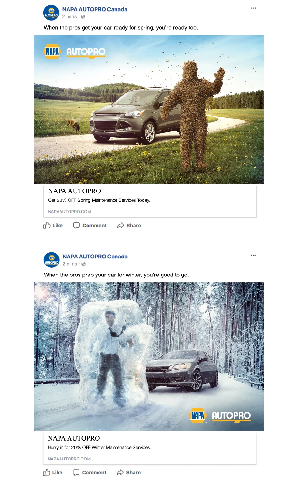
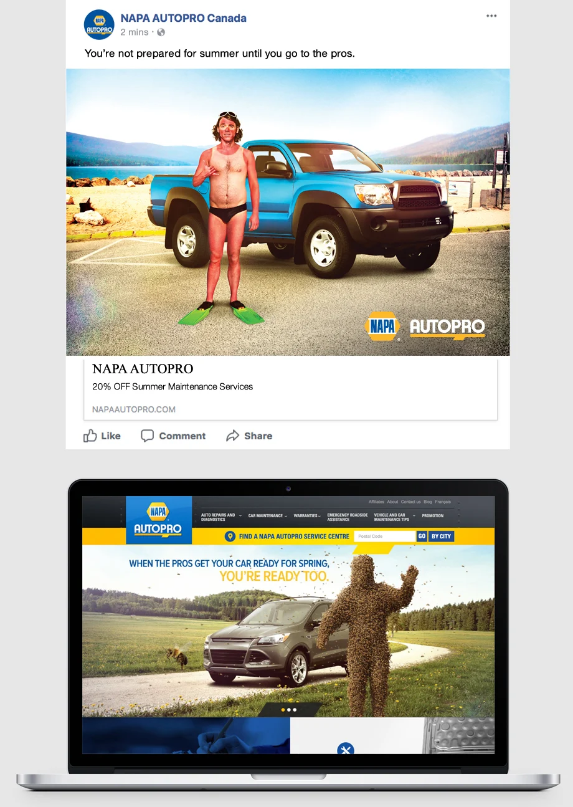
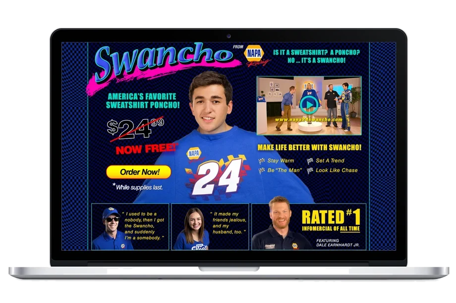
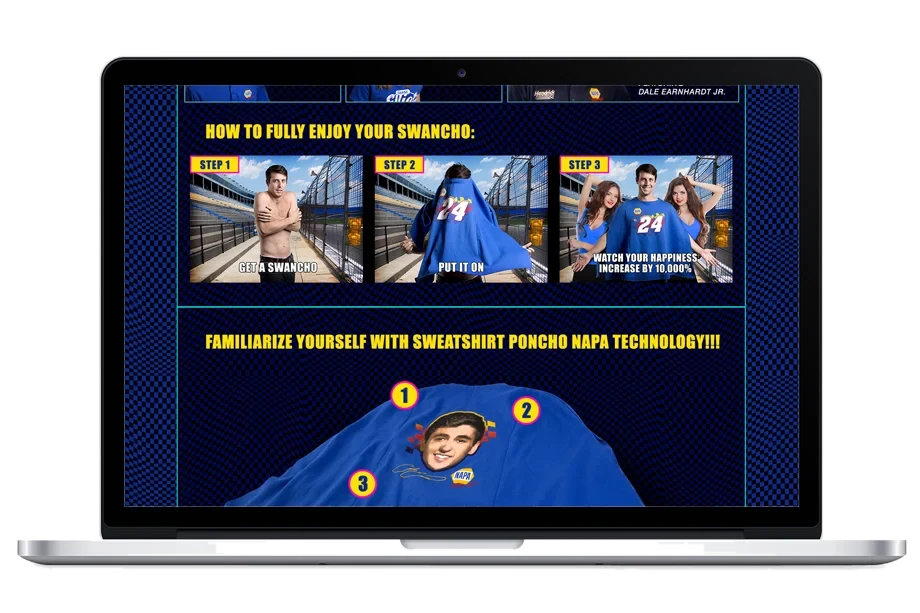
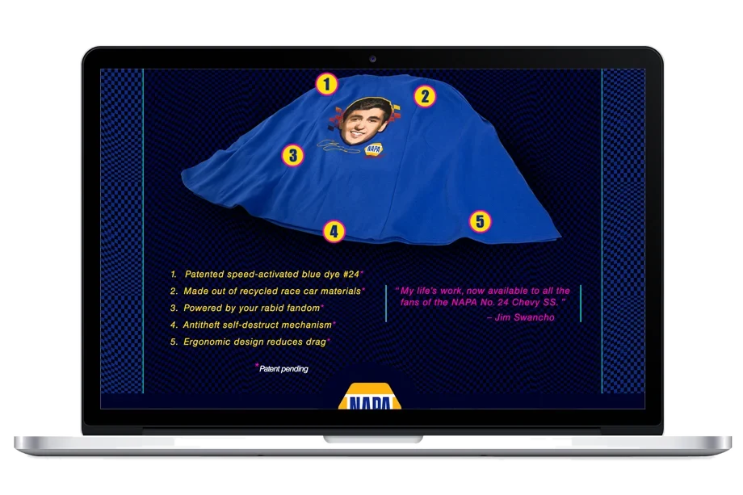
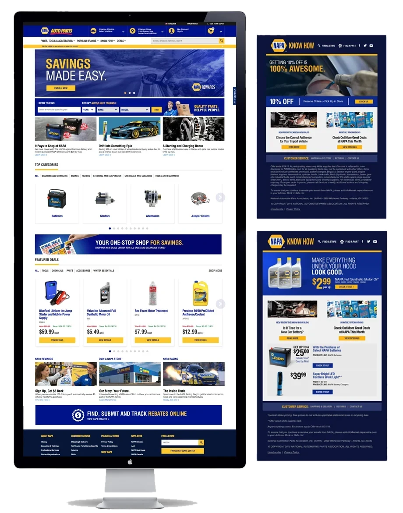
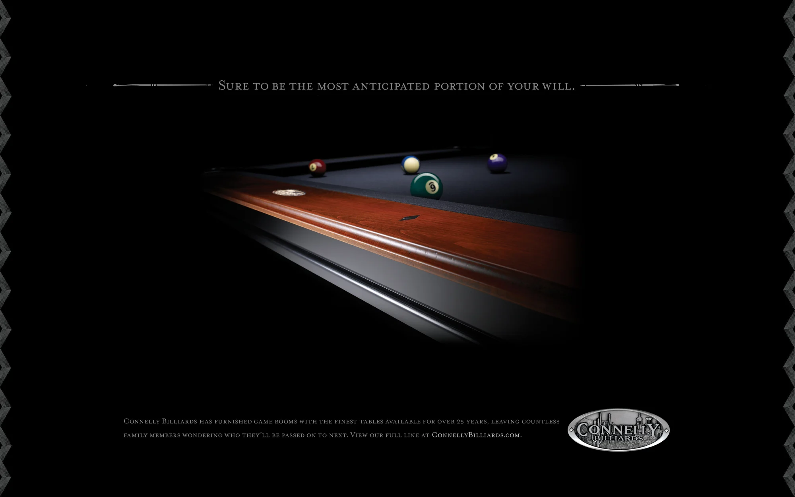

We made a lot of fun stuff on the NAPA brand team at VML.
We were responsible for supporting NAPA Auto Parts U.S.A. and Canada, NAPA Racing, NAPA AUTOPRO, NAPA AutoCare, NAPA Truck Service Centers and NAPA.com.
Smartest Car OLVs
Smarter technology built into vehicles makes it harder and more expensive for your average joe to be able to fix his. We channeled our obnoxious inner Elon Musk to help people consider keeping the car they already own.
NAPA AUTOPRO
AUTOPROs are NAPA Canada's nationwide flagship service stations. One of their main focal points is promoting seasonal maintenance. We created attention-grabbing, seasonal key visuals used for in-store signage, fliers, social, and other digital placements.


NAPA Racing: Swancho
NAPA Racing experienced a huge spike in engagement when they showcased a line of faux Chase Elliott products. The Swancho built off the irreverent tone of the NAPA Racing brand, bringing the actual product to life with its own infomercial and social campaign.



NAPA Online: E‑comm Site & Email
I served as VML's creative lead for NAPA Online. Collaborating with planners and email specialists, we implemented the right touch points in the right places at the right times. Then my team and I went to work to make every asset delivered look and sound undeniably NAPA.

Credits
Smartest Car Director: Monty Browne
Production Partner: Liquid9
- Executive Creative DirectorAaron Evenson
- Group Creative DirectorJames Holden
- Creative DirectorDerek Anderson
- Associate Creative DirectorRobert Schneider
- Associate Creative DirectorAdam LaRocca
- Associate Creative DirectorJonathan Vigliaturo
- Associate Creative DirectorMonty Browne
- Art DirectorMatt McNary
- CopywriterPatrick Farrell
- AgencyVMLY&R

Next project
Connelly Billiards